Kelantan is a rural state in the northeast of Peninsular Malaysia.
There are 10 cities in Kelantan; Kota Bharu, Kuala Krai, Gua Musang, Rantau Panjang, Tanah Merah, Tumpat, Pasir Puteh, Jeli, Machang, Bachok.
Kota Bharu is the state capital, and focal point for Kelantan's administration and business activities.
PLACES TO VISIT
KOTA BHARU
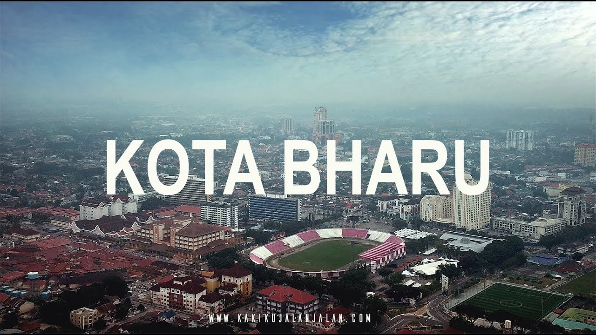
Kota Bharu means ‘New City’ in Malay which is a bit of a misnomer as this is actually one of the most traditional places in all of Malaysia.
Kota Bharu (which is sometimes also spelled Kota Baru) is the capital of the state of Kelantan on the east coast of peninsular Malaysia and many people simply visit it as part of a trip to the lush Perhentian Islands off the coast.
RANTAU PANJANG
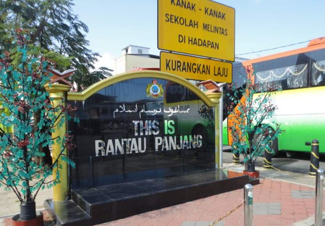
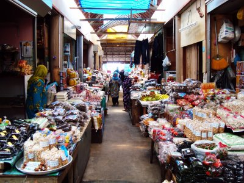
Variety of fake goods, usually made in Thailand.
These place is shoppers' heaven since it is duty-free zones.
Famous with lokching, cendol, coconut drink.
BEACHES
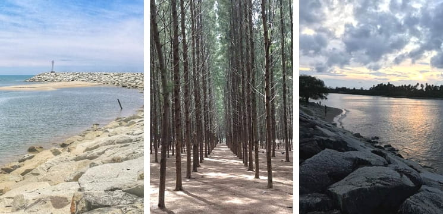
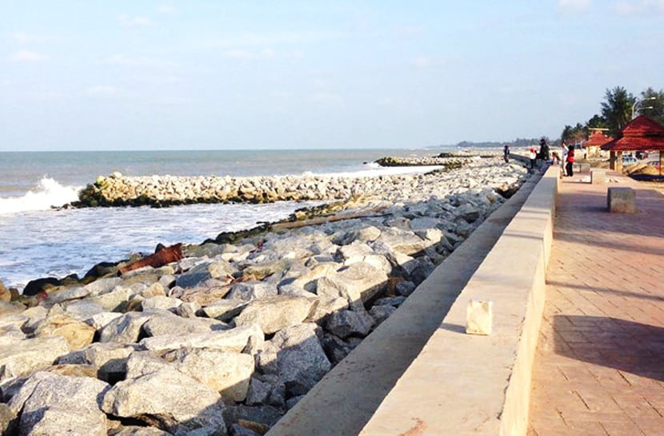
Pantai Cahaya Bulan (Moonlight Beach) - one of Kelantan's popular beaches
Pantai Senok - one of Kelantan's popular beaches that nicknamed as Malaysia's Nami Island
popular with seafood, hotdog, fishball fritters.
WAKAF CHE YEH
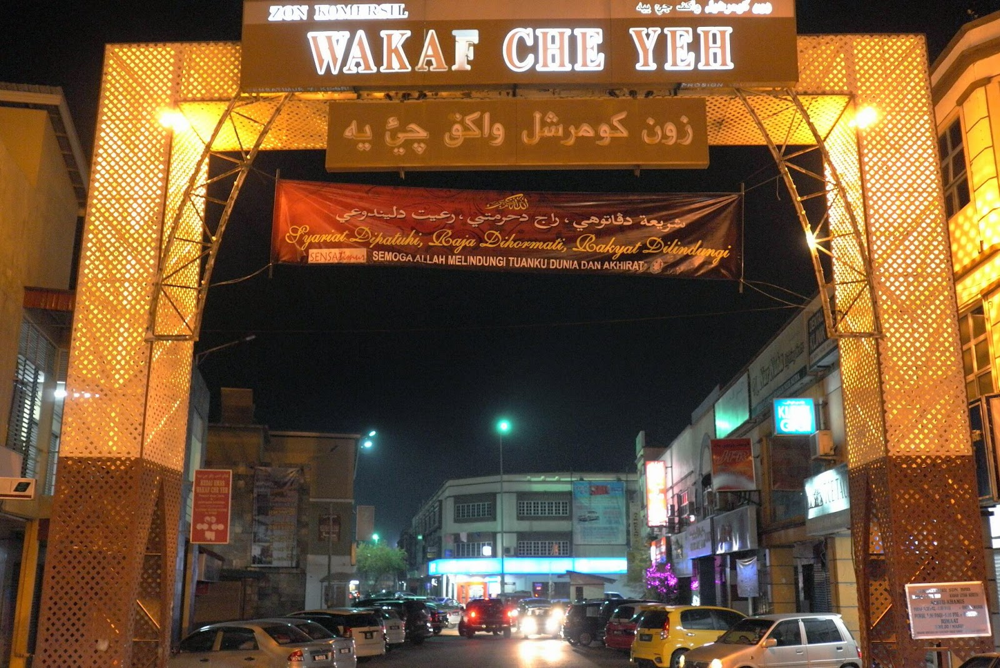
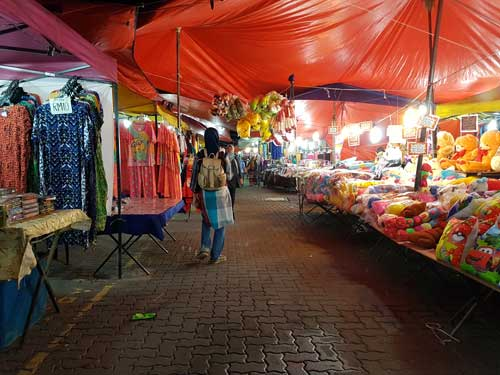
Tourist can buy local souvenirs, clothes
PASAR SITI KHADIJAH
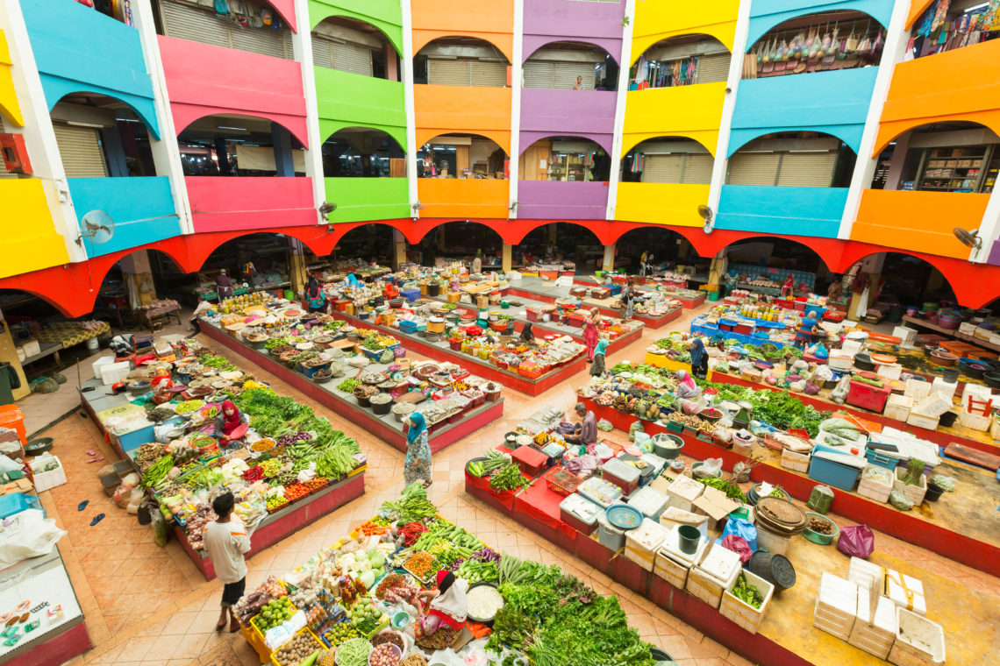
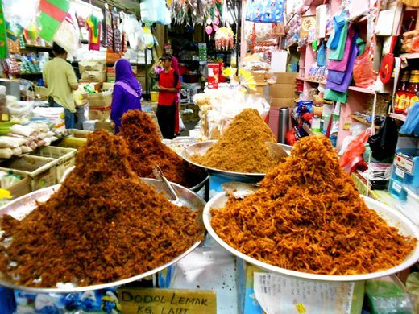
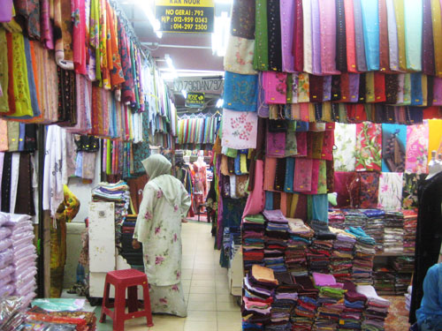
Various types of traditional foods, keropok lekor, budu, buy souvenirs like songket, batik, woodcarving
MUSEUM
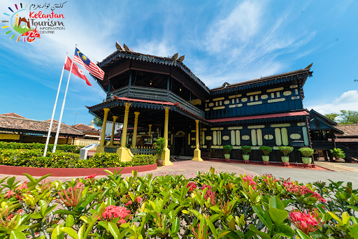
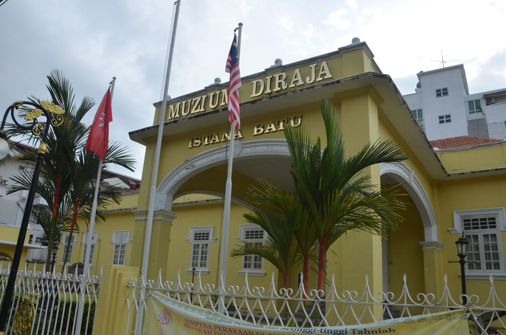
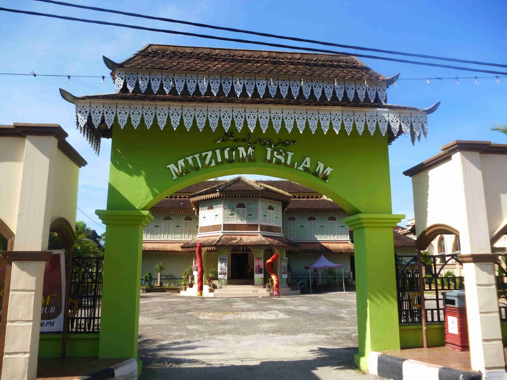
Istana Jahar; was a royal residence in Kota Bharu, Kelantan, was built in 1855 by Sultan Muhammad II of Kelantan for his grandson Long Kundur
Istana Batu; built in 1939, display the history of Kelantan Sultanate.
Muzium Islam; official residence of Kelantan Chief Minister that turn into Islamic Museum in 1991, exhibits the root of Islam in Kelantan
PLACES TO EAT
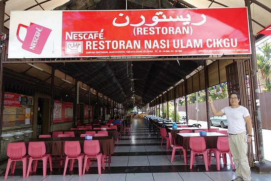
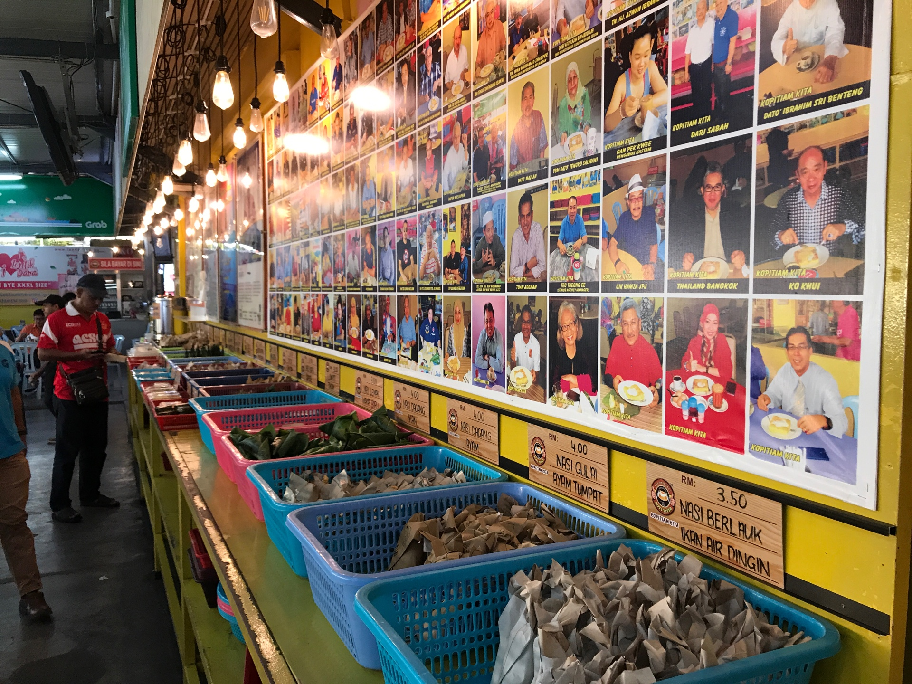
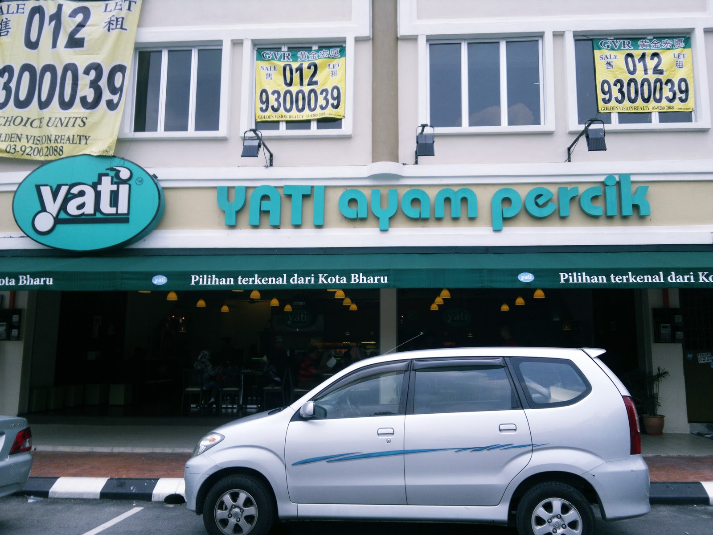
Nasi Ulam Cikgu - variety of lauk pauk with ulam/fresh vegetables
Kopitiam Kita - for breakfast, famous Roti Titab, Nasi Air Dingin, teh tarik.